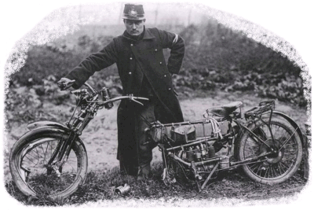

|
 ye shall not turn aside to the right hand or to the left." Deuteronomy 5:32 ¶ Any rebuilt or new engine has to go through a break in process. Each piece of moving metal must get to know and fit with the piece of metal it is moving against. Usually, the manufacturers put a sticker on the speedometer or tachometer telling you to take it easy for 600 miles or so. Your buddy says "If you want to run it hard, break it in hard." As you might expect, the truth is not on the right hand or the left but, in the center. The problem is this. All this rubbing produces heat, which can cause oil to fail, which can cause a piston to seize to a cylinder wall. On the other hand, if there is not enough rubbing, the piston rings will not seat right with the cylinder walls. If this happens the engine will not reach it's full power potential. If the only new parts are piston and rings, as in an engine rebuild, we only have to worry about heat build up from the new parts. If the entire engine is new, the heat built up is even greater, because all the parts are new. Yes, it is true that we have much better machining and quality control on new motorcycle engines, then we did in the past but, moving parts still have to wear in. If you have better, harder metal, it will take longer then if you have poorer, softer metal. Years ago I decided to bore my BMW motorcycle to the first oversize. After a hundred miles of break-in I started to ride normally, which is to say FAST. Well, the bike just was not running right. I re-jetted the carb and it started to run OK. Another hundred miles passed and I had to rejet again. This went on for over one thousand miles. After the last re-jetting I realized I had just put the stock jets back in! It took better then 1100 miles for those rings to break-in. The steel used in BMW motorcycles is very hard. On one hand, if you run the bike too easy, you run the risk of the cylinder walls glazing over and then, maybe, never seating properly. On the other hand, if you run the bike too hard, you run the risk of engine seizure. I suspect, that even if you do glaze the cylinder walls over, if your run the engine hard enough and long enough, the rings will seat. However, this may take several thousand miles, or more, to do. So what's a biker to do? Turn not to the right hand or to the left. A compromise is in order. This is what I do with a freshly rebuilt engine. It will work on new engines too. On a straight, deserted road, I put the bike in second or third gear and accelerate with wide open throttle to about one or two thousand RPM BELOW red line. I then shut the throttle and coast down, in gear, to two thousand RPM or so to let the engine cool a bit. I then do it again. I do this drill about six to ten times, give or take. Then I ride around for a while at an easy pace. I do this several times, if possible. This seats the rings without overheating the engine. If the engine seems to be getting hot, stop the drill and ride around slowly till it cools down. I would continue to do this little drill, every once in a while, during the entire break-in period. This break-in period should last five hundred miles of easy running. At five hundred miles you can start riding harder and harder till the engine is fully broken in at one thousand miles or so. Remember, DO NOT over heat the engine. If you are doing any freeway riding. That is, running long periods of time at a steady throttle setting. I would also add this. Shut the throttle off and then on again, very quickly, every three or four miles. This tends to draw more oil up on the bottom of the pistons, lubing and cooling them. On a freshly rebuilt engine, I like to change the oil and filter at about two hundred miles and then every thousand miles thereafter. On a totally new engine, I change the oil and filter at one hundred fifty miles, three hundred miles, six hundred miles and twelve hundred miles. After that, change the oil and filter every one thousand miles. 
Copyright © 1999-2015 dansmc.com. All rights reserved. |